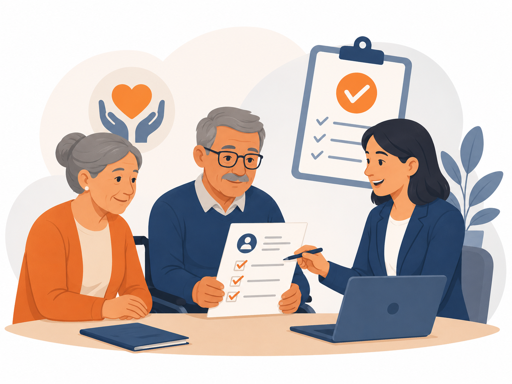

O BPC/LOAS é um benefício assistencial, e não previdenciário: por isso, não exige contribuição ao INSS. Ele garante um salário mínimo mensal a quem se enquadra nos requisitos previstos na Lei Orgânica da Assistência Social (Lei nº 8.742/1993).
O que é o BPC/LOAS
O Benefício de Prestação Continuada (BPC), previsto na Lei Orgânica da Assistência Social (LOAS), assegura o pagamento de um salário mínimo por mês a duas situações distintas: ao idoso com 65 anos ou mais e à pessoa com deficiência de qualquer idade, desde que comprovem não ter meios de prover a própria subsistência nem de tê-la provida por sua família.
Por ser assistencial, o BPC não gera 13º salário e não deixa pensão por morte aos dependentes. Ele é mantido enquanto perdurarem as condições que justificaram a concessão.
Quem tem direito
Idoso
- Ter 65 anos de idade ou mais;
- Comprovar renda familiar dentro do limite legal;
- Estar inscrito no Cadastro Único (CadÚnico) e com CPF regular.
Pessoa com deficiência (PCD)
- Possuir impedimento de longo prazo (de natureza física, mental, intelectual ou sensorial);
- Que, em interação com diversas barreiras, possa obstruir sua participação plena e efetiva na sociedade em igualdade de condições com as demais pessoas;
- Comprovar renda familiar dentro do limite legal e estar inscrito no CadÚnico.
O critério de renda
Em regra, considera-se incapaz de prover a manutenção a família cuja renda mensal por pessoa seja igual ou inferior a 1/4 do salário mínimo. No entanto, esse critério não é absoluto: a jurisprudência admite a análise do caso concreto, considerando gastos com saúde, medicamentos, tratamentos e outras circunstâncias que comprometem a renda familiar.
Importante: ultrapassar por pouco o limite de renda não significa, automaticamente, indeferimento. A vulnerabilidade social pode ser demonstrada por outros meios. Cada situação merece uma análise individualizada.
Documentos geralmente necessários
- Documento de identidade e CPF do requerente e dos membros da família;
- Comprovante de residência;
- Inscrição atualizada no Cadastro Único (CadÚnico);
- Comprovantes de renda de todos os integrantes do grupo familiar;
- Para a PCD: laudos, exames e relatórios médicos que comprovem a deficiência e seu caráter de longo prazo.
Como é feito o pedido
O requerimento é feito junto ao INSS (pelo aplicativo/site Meu INSS ou pela central 135), após a inscrição e atualização no CadÚnico. No caso da pessoa com deficiência, costuma haver avaliação social e perícia médica.
Se o benefício for indeferido administrativamente, é possível questionar a decisão por meio de recurso ou de ação judicial, conforme a análise técnica de cada caso.
Tem dúvidas sobre o seu direito ao BPC/LOAS?
Receba uma orientação individualizada e segura sobre a sua situação específica.
Agendar atendimentoEste conteúdo tem caráter meramente informativo e não substitui a orientação jurídica individualizada. A análise de cada caso depende de avaliação específica da documentação e das circunstâncias pessoais. Conteúdo elaborado em conformidade com as diretrizes éticas da OAB.